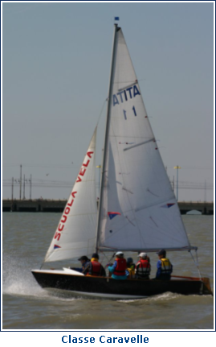

CLASSE CARAVELLE di Luigi Candela
INTRODUZIONE
Vidi per la prima volta il Caravelle all'inizio degli anni '80 al Vela Club di Palermo. Era di propriet� di un socio e lo mise a disposizione del Club.

In quel periodo ero occupato con la squadra giovanile optimist e questa deriva pass� inosservata e incompresa da me e da molti altri. Il motivo principale fu che tra gli istruttori FIV non esisteva il concetto di "deriva d'istruzione collettiva". Non si sapeva come lavorare con una barca simile con forme considerate strane. Eravamo abituati alle belle e slanciate forme delle barche da regata. Faceva eccezione l'optimist che era la deriva super coccolata dalla FIV.
Iniziai a lavorare con queste derive nel 1988 a Casa di Vela Elba. C'erano quattro bei Caravelle in compensato marino costruiti a La Rochelle rispettando fedelmente il progetto di J.J. Herbulot. Fu Gigi Monteleone, responsabile e proprietario della scuola, che mi fece scoprire le qualit� didattiche di queste derive.
STORIA
Jean-Jacques Herbulot quando progett� il Caravelle, nel 1952, era gi� un atleta affermato e un progettista che stava dando l'avvio alla democratizzazione della vela attraverso idee nuove. Jean-Jacques aveva gi� rappresentato la Francia ai giochi olimpici del 1932 (Los Angeles in Star), del 1936 (Kiel in Star) del 1948 (Torquay in Firefly) e del 1956 (Melbourne in 5,50 S.I.)
Jean-Jacques Herbulot progett� inizialmente questo scafo per i pescatori francesi dell'oceano Atlantico che l'avrebbero dovuto utilizzare come barca appoggio, ma non ebbe molto successo. Fu invece scoperto dal Centro Nautico des Glenans (l'arcipelago a sud della penisola Bretone) che l'adottarono come barca scuola d'istruzione collettiva. Da quel momento il suo successo fu inarrestabile fino agli anni '80.
Divent� la pi� utilizzata in molti paesi del nord Europa e del mediterraneo. Allievi e istruttori della scuola bretone soprannominarono questa deriva "Jeep del mare" per la sua versatilit�.
Per moltissimi anni � stata anche una delle derive pi� usate in tutte le scuole dei villaggi turistici del Club Mediterran�.
In Italia il Centro Velico Caprera ha formato la maggioranza dei suoi allievi (oltre 45.000) su questa deriva occupandosi anche della sua costruzione presso la base nautica della scuola.
E' stato cos� anche per alcune importanti scuole italiane come Casa di Vela Elba, la Marina Militare Italiana, per alcune sezioni della Lega Navale Italiana.
..............continua
|